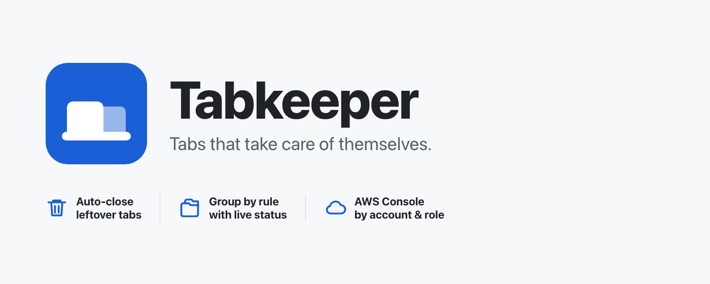

Tabkeeper keeps your tab strip tidy in three ways. Everything is configured on the settings page (click the toolbar icon, then All rules, or right-click the icon and choose Options).
You can reopen this welcome page at any time using Help in the popup or settings header.
Permissions, site access and your data explains what Tabkeeper reads and why Chrome asks for access.
Keyboard shortcuts: Alt+Shift+P pauses or resumes closing,
Alt+Shift+G applies grouping rules to the current tab. Change them at
chrome://extensions/shortcuts.
Tabkeeper can put tabs into Chrome tab groups based on their URL, and append a short status read from
the page to the group title, so a Jira ticket becomes ABC-123 - In Progress and a merge request
project!17 - Open · CI passed. This guide covers the one part that needs a little care: telling
the extension where on the page the status lives.
A CSS selector is the address of an element on a web page, the same thing stylesheets use to pick what to
style. #status-val means "the element whose id is status-val". button.state means
"a button with the class state". [data-testid="header-state"] means "the element whose
data-testid attribute is header-state". The extension finds that element, reads its text, and shows it.
id, data-testid or aria-label.If the highlighted element is an icon or a wrapper with no text, click the parent or child in the Elements panel until the line that contains the actual words is selected.
| Prefer | Why |
|---|---|
#some-id | Ids rarely change between releases. |
[data-testid="…"] | Added for the product's own tests; very stable. |
[aria-label="…"] | Accessibility labels change less than visual classes. |
.gl-badge-content (short, meaningful class) | Fine when the class names a component. |
| Avoid | Why |
.css-1x2y3z, ._3kd9s | Generated class names change on every deploy. |
div > div > span:nth-child(3) | Breaks as soon as the layout shifts. |
In DevTools, open the Console tab and run:
document.querySelector('[data-testid="header-state"]').textContent
If it prints the status text, the selector works. If it prints null, the selector matched
nothing; if it prints an empty string, you selected a wrapper and need the inner element.
Separate alternatives with commas. They are tried in the order you write them, and the first one that finds an element with text wins. Put the most specific first and the most generic last:
[data-testid="header-state"], .gh-header-meta .State, .State
This matters more than it looks: a plain stylesheet treats a comma list as one selector and returns matches in page order, so a generic last-resort alternative would beat a specific one whenever both exist. The extension evaluates each alternative on its own to avoid that.
Add another status field when you want two things in the title, such as a merge request's state and its
pipeline result. Values are joined with · . Use the optional Label to prefix a
value (CI passed) and Keep only to trim a longer text with a regex:
#\d+\s+(\S+) turns Pipeline #18395789 passed into passed. If the regex
has a capture group the group is kept, otherwise the whole match. Fields that never appear are simply left
out of the title.
Test on current tab is a dry run. It shows the group title the rule would produce, each field's value and the element it was read from, and the final title exactly as it would appear. Nothing is grouped and nothing is watched. Chrome asks for permission to read the site the first time; grouping works without it, but the status does not.
Chrome shows a group title on one line and cuts the end when the tab strip is crowded, which is where the
status sits. The Max group title length setting shortens the base title with …
and always keeps the full status: perimeterx-lambda-at-… - Blocked. The base is never cut below
eight characters so ticket keys stay whole. Statuses are capped at 80 characters regardless.
Tabkeeper has no developer server, account system, analytics or advertising. It makes no network requests. Its tab management happens in your browser. Chrome Sync, if enabled, can sync rules and settings through your Google account.
Tabkeeper can read the titles and URLs of your open tabs to match rules, close tabs and create tab groups. It also uses tab state such as age, recent use, whether a tab is pinned, and whether it is playing audio. Those permissions do not give it access to the text inside a page. No optional site access is granted at install.
A live status, such as In Progress, is inside the page rather than in the tab title. Tabkeeper needs your approval to run its reader there. Saving a status rule requests its Site origin; Test on current tab requests the current tab's site, which may be different. Access covers all paths on that site, not only the current ticket, and lasts until you revoke it. Matching tabs can then update their status automatically.
The browser permission is broader than the reader's intended use. Chrome grants page access for the approved site, not a restriction to one selector. Tabkeeper uses your configured selectors to read status text or selected form values; it does not edit the page. Choose only non-sensitive status fields: a selector can read an input or textarea value, and that value may appear in a tab group title or Test results.
AWS grouping requests https://*.console.aws.amazon.com/* to cover the console's regional and
account subdomains, including multi-session hosts. It reads account, role and user labels from the console
navigation and the region from the URL. It does not call AWS APIs or use AWS access keys.
You can decline: closing and basic grouping still work. Page status and AWS account grouping need the corresponding site access. Change access in Chrome → Extensions → Manage extensions → Tabkeeper → Details → Site access. After revoking it, reload affected tabs to remove any reader already running in those pages. Existing group titles are not automatically erased.
Tabkeeper does not access Chrome's browsing-history database, cookie store or saved-password store. It does not record keystrokes, take screenshots, or request camera, microphone or location access. It does not upload tab titles, URLs, page content, statuses or AWS labels to the developer or any analytics service. Chrome Sync handles rules/settings separately as described above. Custom selectors can still read sensitive page fields if you choose them.
Removing Tabkeeper removes its extension storage from that browser. It does not remove JSON files you exported or erase information already displayed in existing tab group titles. Remove those separately if needed.